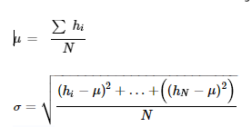
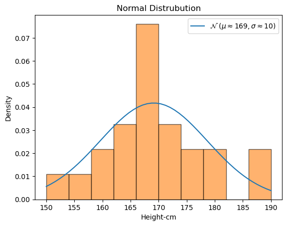

Distribution refers to the way that the values in a dataset are distributed. This can be important, as the distribution of the values can have a significant impact on the performance of a machine learning algorithm.
There are many types of distributions that can occur in a dataset, including normal, uniform, and skewed distributions. The normal distribution is the most common, characterized by a bell-shaped curve symmetrical around the data's mean. A uniform distribution is one in which the values are evenly distributed across the range of the data, while a skewed distribution is one in which the values are not evenly distributed and are instead concentrated on one side of the range.
In general, the distribution of the values in a dataset can affect the performance of a machine learning algorithm in many ways. For example, if the values are not evenly distributed, this can cause the algorithm to be biased toward certain values, which can lead to poor performance. On the other hand, if the values are normally distributed, this can make it easier for the algorithm to learn and make predictions.
Imagine you are studying the heights in cm of a few students taking SIT720 course (168, 188, 167, 155, 170, 166, 179, 168, 167, 166, 164, 169, 170, 159, 163, 175, 173, 173, 177, 190, 150, 160, 181, 165). If we plot the heights as a histogram and plot the distribution curve, we can see it creates a bell-shaped curve.

